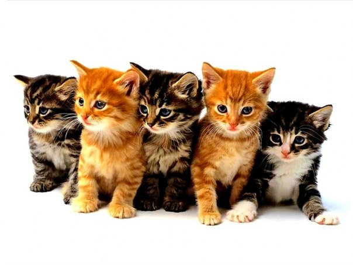

Кошки

Кошка, или домашняя кошка (лат. Felis silvestris catus) — домашнее животное, одно из наиболее популярных «животных-компаньонов».
С зоологической точки зрения, домашняя кошка — млекопитающее семейства кошачьих отряда хищных. Ранее домашнюю кошку нередко рассматривали как отдельный биологический вид. С точки зрения современной биологической систематики домашняя кошка является подвидом лесной кошки .
Являясь одиночным охотником на грызунов и других мелких животных, кошка — социальное животное, использующее для общения широкий диапазон звуковых сигналов, а также феромоны и движения тела.
В настоящее время в мире насчитывается около 600 млн домашних кошек, выведено около 200 пород, от длинношёрстных (персидская кошка) до лишённых шерсти (сфинксы), признанных и зарегистрированных различными фелинологическими организациями.